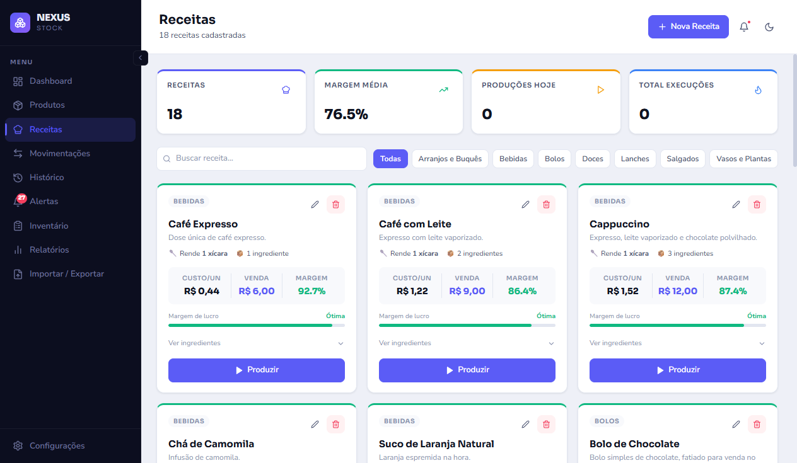
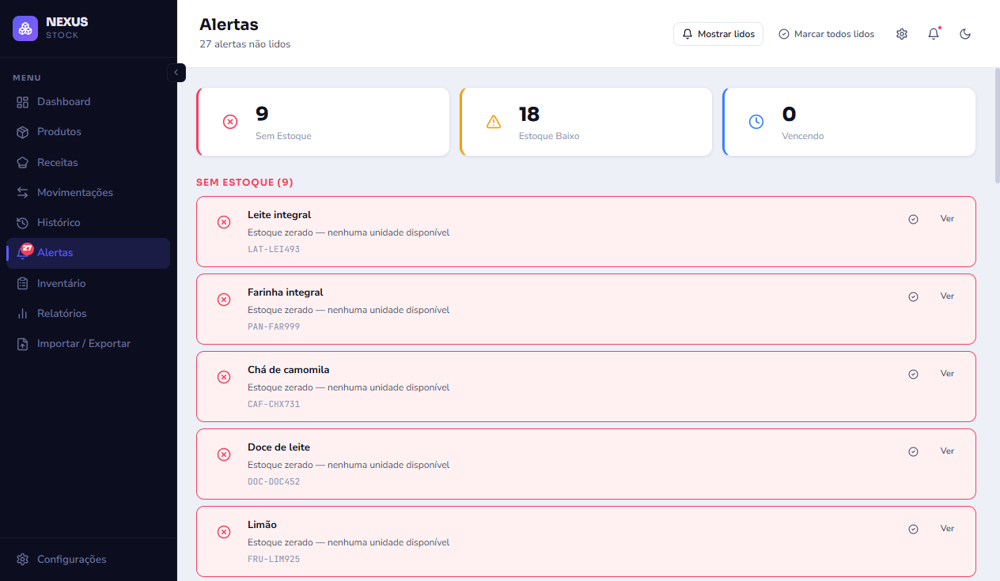
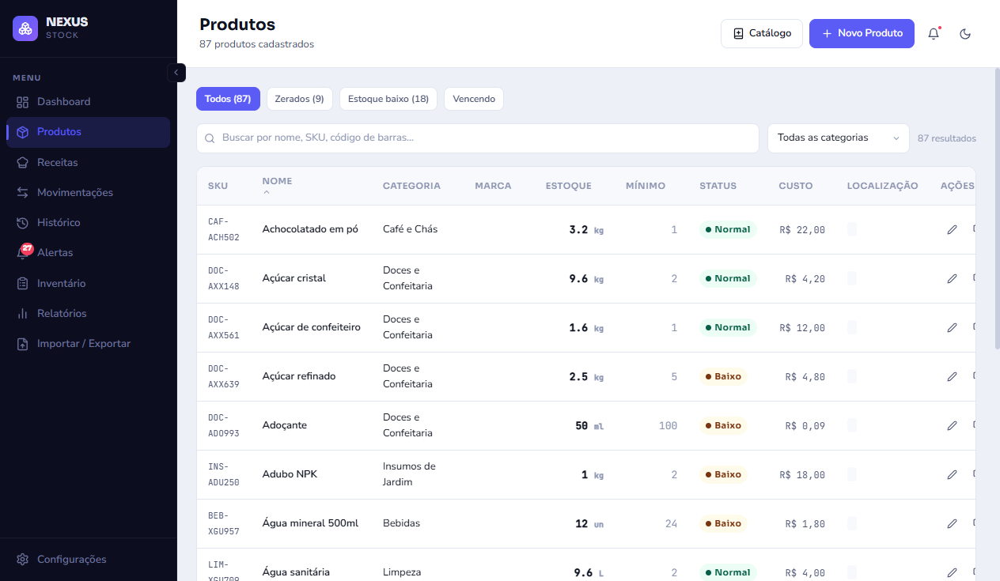
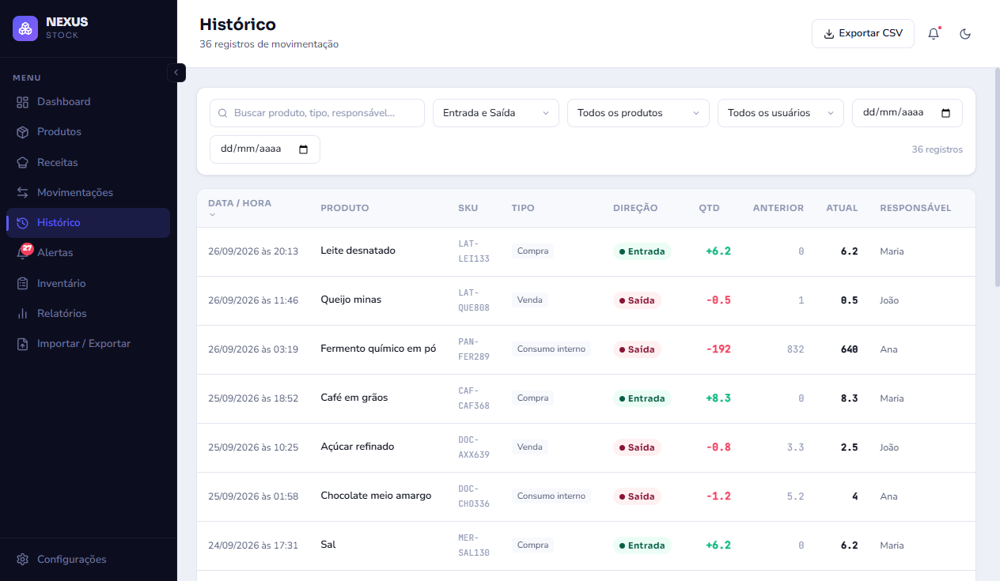

Saiba quanto sobrou no estoque — e quanto cada receita realmente rende.
Programa de estoque para cafeteria, floricultura e pequenas lojas. Você cadastra os produtos e as receitas, e o sistema calcula o custo, a margem e avisa antes de faltar.
Para Windows · funciona sem internet · sem mensalidade
| Receita | Custo | Preço | Margem |
|---|---|---|---|
| Bolo de cenoura | R$ 18,40 | R$ 45,00 | 59% |
| Cappuccino | R$ 3,10 | R$ 9,00 | 66% |
| Buquê de girassol | R$ 52,00 | R$ 70,00 | 26% |
Se isso acontece na sua loja, o Nexus Stock é para você
“Acho que tem, mas não sei quanto.”
Ninguém confia na contagem de cabeça. O sistema mostra o saldo de cada produto na hora.
Faltou o que mais vende
Só se descobre com o cliente na frente. Aqui o alerta de estoque baixo chega antes.
Vende bem e sobra pouco
O preço foi definido “no olho”. Com o custo real de cada receita, você enxerga onde está perdendo.
O que você ganha
Receitas com custo e margem
Monte cada receita com seus ingredientes. Ao produzir, o estoque dos ingredientes baixa sozinho, e o sistema avisa se algum não for suficiente.
Entradas, saídas e histórico
Todo movimento fica registrado: quem fez, quando e por quê. Não deixa sair mais do que existe em estoque.
Alertas de estoque
Aviso de produto acabando ou zerado, com o mínimo que você define para cada item.
Inventário
Conte o estoque físico, veja as diferenças e aplique o ajuste com um clique.
Relatórios
Painel com o resumo do estoque e relatórios para acompanhar o que entra, o que sai e o que rende.
Catálogo pronto
Já vem com uma lista de produtos e receitas de cafeteria e floricultura para você só ajustar os custos.
Veja por dentro
Telas reais do programa, com dados de exemplo.




Seus dados ficam com você
Sem internet, sem mensalidade
Instala no computador da loja e pronto. Não depende de conexão, não tem conta para criar e não tem cobrança mensal.
Backup automático
O sistema guarda cópias sozinho na pasta Documentos, fáceis de levar num pendrive, e você pode conferir se o último backup está íntegro com um clique.
Mais de um computador na loja?
Um computador guarda os dados e os outros abrem o sistema pelo navegador, na rede da loja. Sem instalar nada nos outros e sem internet.
- Protegido por senha: só entra quem você autorizar.
- Se duas pessoas abrem a mesma tela, só a primeira edita. A outra apenas visualiza, sem risco de um apagar o trabalho do outro.
- As mudanças de um computador aparecem nos outros em poucos segundos.
Como funciona
Teste 15 dias
Chame no WhatsApp, receba o instalador e use com os seus produtos de verdade.
Cadastre e use
Use o catálogo pronto ou cadastre o seu. Ajuste os custos na primeira compra.
Ative a licença
Gostou? Você recebe uma chave e o sistema fica liberado para sempre, no nome da sua loja.
Pague uma vez, use sempre
Uma licença por loja. Sem mensalidade e sem letra miúda.
pagamento único
- 15 dias de teste grátis
- Todas as funções incluídas
- Modo rede para vários computadores
- Instalação assistida opcional: + R$ 150
Perguntas frequentes
Preciso de internet?
Não. O sistema funciona inteiro sem conexão. Só é preciso rede local se você quiser usar em mais de um computador.
Funciona em Mac ou celular?
O programa é para Windows. Em outros computadores da mesma rede, dá para abrir pelo navegador usando o modo rede.
E se o computador quebrar?
O backup automático grava cópias em Documentos\Estoque\backups. Copie para um pendrive de vez em quando e restaure em qualquer computador.
Os meus dados vão para a internet?
Não. Tudo fica no computador da loja. Não há conta, nuvem nem envio de informações.
O Windows mostra um aviso ao instalar. É seguro?
O instalador ainda não tem assinatura digital paga, então o Windows mostra “O Windows protegeu o seu computador” na primeira vez. Clique em Mais informações → Executar assim mesmo. Ajudo você na instalação, se precisar.
Serve para o meu tipo de loja?
Foi feito e usado numa cafeteria com floricultura, e serve para quem controla produtos e receitas: padaria, confeitaria, lanchonete, floricultura. Se tiver dúvida, teste os 15 dias.
Comece hoje, sem compromisso
15 dias para ver se o Nexus Stock resolve o estoque da sua loja.